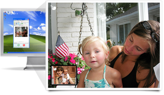

Skype for Windows
Get the newest version here.
Skype 3.6 for Windows
You seem to be running an older version of Skype.
We recommend you to upgrade to the latest version.

 Make calls from your computer - free to other people on Skype, cheap to phones and mobiles across the world. And the sound quality is great, too - keep it running all day, and it’s like you’re in the same room as the person on the other end.
Make calls from your computer - free to other people on Skype, cheap to phones and mobiles across the world. And the sound quality is great, too - keep it running all day, and it’s like you’re in the same room as the person on the other end.
Features
- Free Skype-to-Skype calls to people anywhere in the world.
- Free video calls - plus get more detail than ever before with High Quality Video.
- Call phones and mobiles at pretty cheap rates per minute.
- Instant message when it’s not a good time to talk.
- Forward your calls and get text messages when you’re not online.
- Search the web with the Google Toolbar (optional install).
New in this version

High Quality Video
Clearer, crisper, sharper - our best ever video call quality.
High Quality Video
Download Skype and you can make free video calls. All you need is a webcam and the standard system requirements for Skype above.
We’ve recently launched High Quality Video giving you our clearest, crispest, sharpest ever video quality. To use High Quality Video, you’ll need:
- The latest version of Skype for Windows.
- An optimised Logitech High Quality Video webcam.
- A computer with a dual core processor.
- A fast broadband connection.
- The latest High Quality Video webcam software.
Want some more detail?
There’s lots more to know about High Quality Video. Read about it here.
- System requirements
- PC running Windows 2000, XP or Vista. (Windows 2000 users require DirectX 9.0 for video calls).
- Internet connection (broadband is best, GPRS is not supported for voice calls, and results may vary on a satellite connection).
- Speakers and microphone - built-in or separate.
- For voice and video calls we recommend a computer with at least a 1GHz processor, 256 MB RAM and of course a webcam.
- For High Quality Video calls you will need a high quality video webcam and software, a dual-core processor computer and a fast broadband connection (384 kbps).
Technical details
Version 3.6.0.248 File size 22 MB. Official release. Release date: February 5, 2008. File name: SkypeSetup.exe